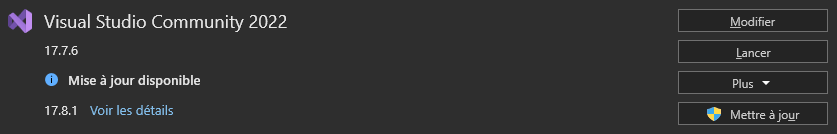
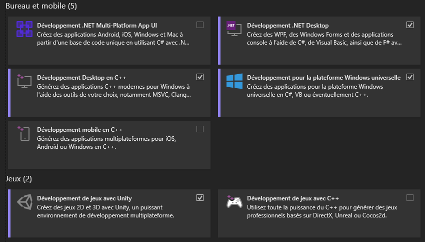

Unity installation
Installer Unity
Pour installer Unity, il va falloir passer par le Unity Hub qui correspond au launcher pour vos différents projets.
De plus, le Hub va permettre de télécharger l'ensemble des addons nécessaires et les différentes versions souhaitées de Unity.
Télécharger Unity pour le Hololens 2
Le Hololens 2 ne fonctionne qu'avec des versions datant de 2021.
Sélectionner l'onglet "Unity 2021.X"
Pour la version 2021.3.32, cliquer sur le bouton "Unity Hub" et l'ouvrir dans Unity
Sur la page pour ajouter des modules, sélectionner seulement Universal Windows Platform Build Support et Windows Build Support (IL2CPP)

Cliquer sur "Install"
Installer Visual Studio
Visual Studio Community est un éditeur et compileur de code. Cet IDE va être utilisé par Unity pour créer des scripts et compiler notre application sur le Hololens 2.
Télécharger l'installeur Visual Studio
Installation de Visual Studio Community
Dans Visual Studio Installer
Cliquer sur modifier
 Sélectionner les modules suivants :
Développement .NET Desktop
Développement Desktop en C++
Développement pour la plateforme Windows universelle
Développement de jeux avec Unity

Le setup de Unity est enfin terminé. La création d'un projet pour le Hololens 2 est maintenant faisable.
Install Unity
To install Unity, you'll need to use the Unity Hub, which is the launcher for your various projects.
In addition, the Hub will allow you to download all the necessary addons and the various versions of Unity you require.
Download Unity for the Hololens 2
The Hololens 2 only works with versions dating from 2021.
Select the "Unity 2021.X" tab
Select version 2021.3.32, click on the "Unity Hub" button and open it in Unity
On the page for adding modules, select only Universal Windows Platform Build Support and Windows Build Support (IL2CPP)
Click on "Install"
Install Visual Studio
Visual Studio Community is a code editor and compiler. This IDE will be used by Unity to create scripts and compile our application on the Hololens 2.
Download Visual Studio installer
Visual Studio Community installation
In the Visual Studio installer
Click on modify
Select the following addons:
.NET Desktop development
C++ Desktop development
Windows universal development platform
Game development with Unity
The Unity setup is finally complete. Creating a project for the Hololens 2 is now feasible.